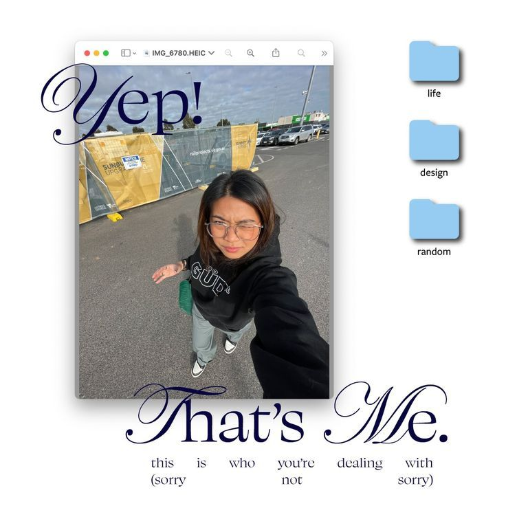

Hi, I'm Tea. Aspiring Product Manager bridging user empathy, technical pragmatism, and intentional design systems. I build digital tools that feel tactile, thoughtful, and human.
Building Products with Intent, Craft & Clarity
Turning ambiguous problem spaces into crisp, validated software solutions.
01. What I'm Working Toward
I am preparing to transition into a full-time Product Management role. My target sweet spot is early-stage (0-to-1) or product-led growth environments where intentional scoping, deep customer discovery, and fast execution matter more than bureaucratic red tape.
[PLACEHOLDER: bio copy — target role details]
Insert your specific target industry (e.g. B2B SaaS, developer tooling, consumer apps, fintech) and geographic or remote preferences.
Insert your specific target industry (e.g. B2B SaaS, developer tooling, consumer apps, fintech) and geographic or remote preferences.
02. Product Philosophy & Solving Hard Problems
Good product management is the discipline of making deliberate trade-offs. I believe that:
- Constraint breeds clarity: Shipping an opinionated, lean v1 teaches you more than debating an overbuilt spec for months.
- Empathy is quantitative and qualitative: Analytics tell you where users drop off; conversations tell you why they felt confused.
- Respect developer velocity: Engineering specs should be rigorous on problem definition, flexible on implementation mechanics.
[PLACEHOLDER: bio copy — your personal story & background]
Add 2-3 sentences about your previous professional background (e.g. design, engineering, business analysis, operations) and what sparked your drive toward PM.
Add 2-3 sentences about your previous professional background (e.g. design, engineering, business analysis, operations) and what sparked your drive toward PM.
03. Core Competencies & Toolkit
Product Discovery
Customer interviews, JTBD frameworks, opportunity solution trees, assumption testing.
Roadmapping & Scoping
PRD writing, RICE/MoSCoW prioritization, release triage, MVP definition.
Execution & Prototyping
Figma wireframing, rapid HTML/CSS proof-of-concepts, user journey mapping.
Data & Validation
Funnel analytics, cohort retention, SQL basics, qualitative feedback loops.
Tea_Tikveshanska_PM_Resume.pdf
[PLACEHOLDER: Attach your real resume file]
I'm always excited to discuss product strategy, 0-to-1 challenges, or new full-time PM opportunities. Feel free to shoot me an email or connect on professional channels:
Tea Tikveshanska
Product Manager & Builder | [PLACEHOLDER: Target Locations / Remote]
Experience & Career Trajectory
Product Lead / Founder [PLACEHOLDER: Your Role]
Personal Trinket Trunk & Side Ventures • 2025 – Present
Scoped, built, and launched user-facing digital applications from 0 to 1. Conducted user interviews, defined technical constraints, and designed tactile web interfaces with high retention cohorts.
[PLACEHOLDER: Previous Role — e.g. Associate PM / Business Analyst / Designer]
[PLACEHOLDER: Company Name] • 2023 – 2025
[PLACEHOLDER: 2-3 bullet points describing your impact, cross-functional collaboration with engineering and design, and metrics moved.]
[PLACEHOLDER: Education / Degree]
[PLACEHOLDER: University / Program] • Graduated 2023
[PLACEHOLDER: Relevant coursework — e.g. Human-Computer Interaction, Systems Engineering, Economics]